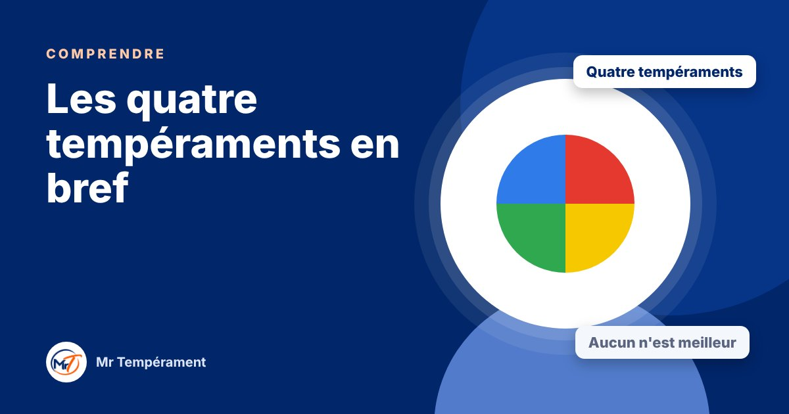

Les quatre tempéraments en bref

Dominant, Influent, Stable, Consciencieux : ce que chacun apporte, et ce qu'il doit surveiller.
Le modèle DISC décrit quatre grands tempéraments. Chacun a une force et un revers. Personne n'est « un seul tempérament » : nous avons un peu des quatre, et l'un d'eux s'exprime le plus. Voici un aperçu rapide, pour vous repérer.
Le Dominant : l'action et le résultat
Le Dominant va droit au but. Il décide vite, prend des responsabilités et avance quand d'autres hésitent. Sa force est le courage. Quand elle perd sa juste mesure, elle devient impulsivité : il peut brusquer, couper la parole ou oublier d'écouter.
L'Influent : le lien et l'enthousiasme
L'Influent crée du lien. Il enthousiasme, rassemble et met de la vie partout où il passe. Sa force est le magnétisme. Poussée trop loin, elle devient superficialité : beaucoup d'idées et de contacts, moins de suivi et de profondeur.
Le Stable : la constance et la loyauté
Le Stable sécurise. Fidèle, patient et à l'écoute, il construit dans la durée et son entourage peut s'appuyer sur lui. Sa force est la constance. Sans juste mesure, elle devient rigidité : il garde ses frustrations et résiste au changement.
Le Consciencieux : la précision et la qualité
Le Consciencieux observe, vérifie et anticipe. Il élève la qualité de tout ce qu'il touche. Sa force est la précision. Excessive, elle devient perfectionnisme : il se critique, retarde ses décisions et se replie face au désaccord.
Aucun tempérament n'est meilleur qu'un autre
Chacun apporte quelque chose d'essentiel : une équipe sans Dominant n'avance pas, sans Influent elle n'a pas d'élan, sans Stable elle s'épuise, sans Consciencieux elle se trompe. L'enjeu n'est pas de changer de tempérament, mais d'apprendre à l'utiliser avec justesse.
Pour aller plus loin
Vous vous reconnaissez dans plusieurs descriptions ? Le test gratuit vous donne votre tempérament dominant en une minute.
Découvrir mon tempérament